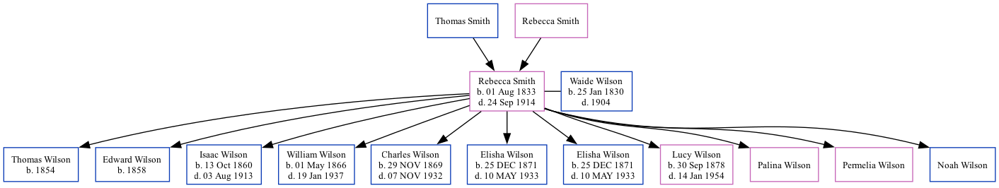

Rebecca Jane Wilson (née Smith) 1833 - 1914
[ Home ] | [ Surnames Index ] | [ Family History ]The child of Thomas Smith and Rebecca Smith, was born in Clinton, Mo on Aug 1, 18331,2 and married Waide Wilson (with whom she had 11 children: Thomas W, Edward W, Isaac Newton, William Perry, Charles Francis, Elisha Filewood, Elisha, Lucy Amanda, Palina, Permelia and Noah) in Clinton, Henry County, MO on Apr 4, 18512.
During her life, she was living in Galena, Jasper, Missouri, USA in 18801; and in Joplin Ward 5, Jasper, Missouri in 19002.
She died on Sep 24, 1914 in Newton County, MO.
Parents
Children
- Thomas W was born in 1854
- Edward W was born in 1858
- Isaac Newton was born on Oct 13, 1860
- William Perry was born on May 1, 1866
- Charles Francis was born on Nov 29, 1869
- Elisha Filewood was born on Dec 25, 1871
- Elisha was born on Dec 25, 1871
- Lucy Amanda was born on Sep 30, 1878
Citations
- 1880 United States Federal Census Ancestry.com Operations Inc (Age: 46; Marital Status: Married; Relation to Head of House: Wife)
- 1900 United States Federal Census Ancestry.com Operations Inc (Age: 66; Marital Status: Married; Relation to Head of House: Wife)
Family Tree
Data (GEDCOM) maintained by Jay Weston Hannah, Omaha, Nebraska, USA.
Website generated by ged2site. Last updated on Jun 18, 2024.